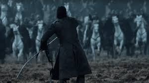
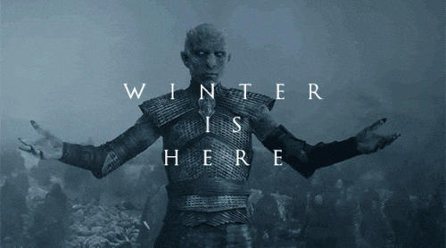
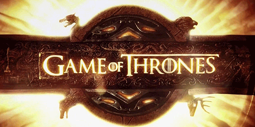

Game of Thrones is a sprawling epic fantasy saga centered on power, politics, and survival in the
fictional
continent of Westeros,
where seasons can last for years or even decades.


The War for the Iron Throne: Following the death of King Robert Baratheon, several noble
families—primarily
the
Starks, Lannisters,
and Baratheons—plunge the realm into a brutal civil war. It is a world of "gray"
morality
where political schemes, betrayals, and shifting alliances take center stage.
Game of Thrones is my favorite TV series because it is very interesting.